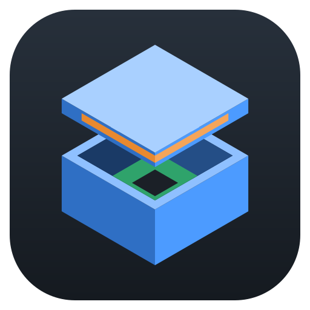

easyCAD
Parametric CAD for electronics enclosures
easyCAD is a desktop app for designing enclosures for 3D printing and injection molding. It reads your PCB straight from EasyEDA (board STEP and outline DXF) and builds a parametric enclosure around it: shells, self-healing fillets, parting joints with tongue and groove, O-ring glands and snap fits, standoffs from the board's mounting holes, a screw and insert library with the right hole for each, assemblies with mates, 2D drawings, and STEP / STL / 3MF export.
It runs on your computer, works fully offline, and is built in Rust on the OpenCascade kernel.
Google Drive sync
If you choose to sign in with Google, easyCAD keeps your designs, parts library and settings
in an easyCAD folder in your own Google Drive, so they follow you between computers.
easyCAD asks only for the drive.file permission: it can see the files it created and
nothing else in your Drive. See the privacy policy.